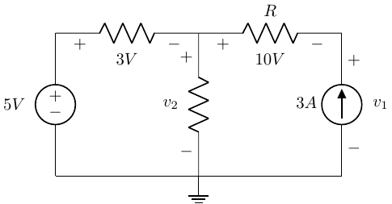
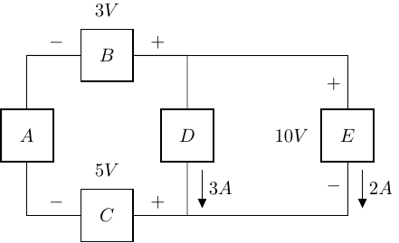

Problem Set 01
BME253L - Fall 2025
Please complete the following problems and tasks, and upload your solutions to Gradescope, using the formatting guidelines below.
Battery Energy Capacity The energy capacity of a pacemaker battery is usually specified in milliampere-hours (mA-h). For example, a 1000 mA-h battery can supply 1 A for 1 hour, 500 mA for 2 h, etc.
How many coulombs of charge can nominally be drawn from a 3000 mA-h battery?
How many electrons are necessary for your answer to (a)?
Battery Charging The figure below shows a two-rate charge cycle for a battery. Solve for:
The total charge transferred to the battery.
The total energy transferred to the battery.
KCL Apply KCL to determine the unknown currents in the circuit below. Assume that \(I_0 = -2 A\), \(I_1 = -4 A\), \(I_S = 8 A\), and \(V_S = 12 V\).
KVL Apply KVL to find the voltages \(v_1\) and \(v_2\) in the circuit below:

Power Sign Conventions For the circuit below:
Which components are power sources and which are power loads?
Is energy conserved in this circuit? Explain.

Power & Energy A nichrome heating element requires 23 A at 110 V.
How much power is nominally dissipated as heat from this element?
How much energy is dissipated by this heating element over a 24-h period?
If this heating element is powered by a source at a rate of 6 cents/kWh, what is the cost of the energy neede for a 24-h period?
Parallel Resistance A 24 V battery is used to power IV pumps on two surgical beds in a post-operative suite. The beds are attached in parallel to this single battery, and each bed should nominally act as a 75 W load on the battery. One of the beds, however, has a larger capacity IV pump installed that acts as a cummulative 100 W load for that bed.
What is the effective resistance of each bed based on its power load?
What is the total equivalent resistance experience by the battery when both beds are attached to it in parallel?
More Parallel Resistance A medical student comes into the post-operative suite described above and attaches a laptop and a cellphone (in parallel) to the battery powering the two beds.
What is the equivalent resistance of the total load now attached to the battery (2 15-W, 1 75-W and 1 100-W load, in parallel)?
What is the total current drawn from the battery with these 4 loads attached?
Types of Battery Cells Answer the following questions about batteries:
What are the differences between rechargeable and non-rechargeable batteries,
Create a table comparing and constrasting the different types of rechargeable batteries (e.g., lead acid, NiCd, NiMH, Li-ion) in terms of:
Energy Density
Cycle Life (number of charge/discharge cycles)
Safety
Cost
What is the nominal voltage difference between an AAA, AA, C, and D cell alkaline batteries?
How does the total energy capacity of a 9 V alkaline battery compare to a D cell battery?
What criteria need to be taken into account when a biomedical engineer is choosing a battery for an implantable device?
Problem Set Format Guidelines
Please follow these guidelines when completing your problem sets to insure accurate grading and to reduce time to troubleshoot problem solving.
Each problem should be on dedicated pages that will be able to be uniquely selected on Gradescope to associate with specific questions (i.e., do not have multiple problems on the same page).
For problems that involve circuit analysis, make sure that you clearly present an annotated circuit to show what variables correspond to what quantities in the analysis.
Label all circuit elements with symbols.
Solve problems symbolically before substituting in numerical values.
Please write legibly and include all relevant steps in arriving at your solution.
Please place a box around all final solutions.
All answers must have units!! No units = no credit!
Attach any computer code (e.g., Python code) used to solve problems and generate plots.
This should be done with a Jupyter notebook.
Ideally your code should “self described” your thought process, but if unclear, add comments in the code where appropriate to indicate your thought process.
All plots must be appropriately labeled with units.
Problem sets must be scanned and converted to PDFs, uploaded to Gradescope, and have each problem associated with the specific question in Gradescope.
Failure to associated pages of your PDF with specific problems in Gradescope will result in loss of credit for that question.